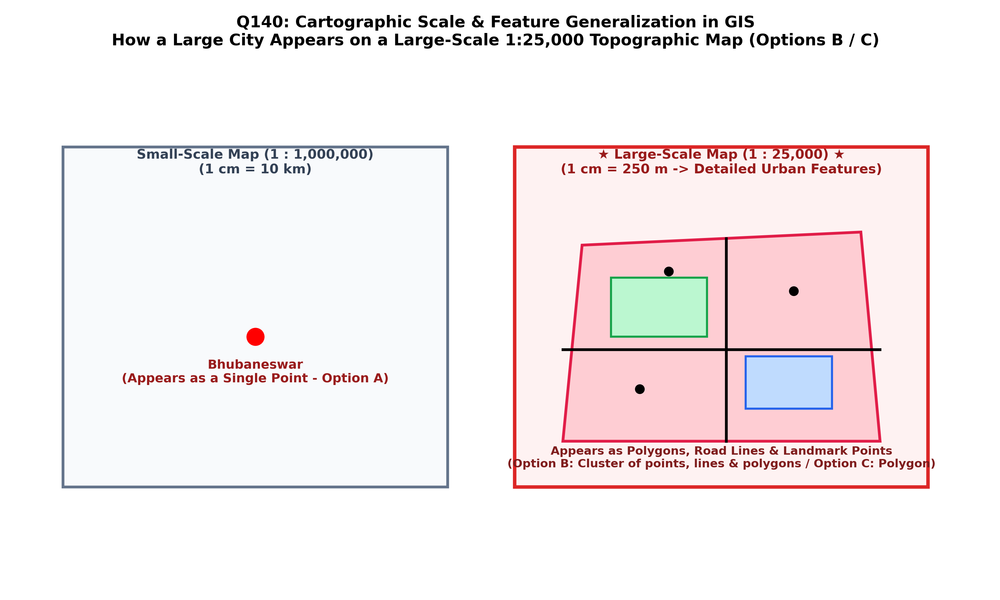

In Geographic Information Systems and cartography, real-world geographical features cannot be represented at their actual physical size. They must be depicted at a defined map scale. A fundamental tenet of spatial modeling is that the geometric primitive (point, line, or polygon) used to represent a real-world entity is strictly dependent upon map scale (Robinson et al.; Chang; Burrough & McDonnell):
| Map Scale Category | Representative Fraction (RF) | Ground Coverage vs Detail | Geometric Representation of a Large City |
|---|---|---|---|
| Large-Scale Topographic Map (The Exam Question) | 1:25,000 (or larger, e.g. 1:10,000) | Covers a small geographic area with high spatial detail ($1\text{ cm} = 250\text{ m}$). | AS A POLYGON (or Complex Area Feature): The city is portrayed as a sprawling 2D areal boundary (polygon) encompassing internal street networks, built-up urban blocks, parks, and administrative municipal borders (Option C). |
| Medium-Scale Map | 1:250,000 | Covers an entire district ($1\text{ cm} = 2.5\text{ km}$). | Generalized irregular polygon or simplified urban boundary showing major transport arteries. |
| Small-Scale Continental / World Map | 1:1,000,000 to 1:50,000,000 | Covers vast national or continental extents with heavy generalization ($1\text{ cm} = 10\text{ to } 500\text{ km}$). | AS A SINGLE POINT: The entire multi-million population metropolis collapses via cartographic symbolization into a 0-dimensional point circle or dot symbol. |

When transitioning from large to small map scales, the cartographer or automated GIS generalizer applies specific generalization operators:
On a 1:25,000 scale map (the classic high-resolution Survey of India and USGS quadrangle topomap), a large city spanning $20\text{ km} \times 20\text{ km}$ occupies a massive $80\text{ cm} \times 80\text{ cm}$ area on the physical map sheet. It is physically impossible to represent it as a single point; it is rendered as an extensive polygon (Option C) containing detailed streets, buildings, and zoning divisions.
On a large-scale map such as 1:25,000 ($1\text{ cm} = 250\text{ m}$), a city represents a major geographical area with distinct municipal boundaries, built-up extents, and territorial zoning. In vector spatial database design and cartographic standards (Chang, Ch. 1; Burrough & McDonnell; Bangar, p. 216), areal features that have measurable spatial length and width at the given scale are modeled and classified fundamentally as Polygons (areal geometric primitives).
A city appears as a single point only on small-scale maps (such as 1:1,000,000 or global atlas maps), where the entire urban area has collapsed to zero area due to cartographic scale limits. On a 1:25,000 map, a city covers dozens of square centimeters and cannot be a single point.
While an urban area internally contains trees (points), roads (lines), and buildings (polygons), the geographic entity "the city as a whole" is categorized in GIS spatial modeling by its bounding areal footprint, which is a polygon. Option C is the canonical GIS primitive answer.
Incorrect. A city is not depicted as an isolated scatter of dots on a large-scale topographic map; it is demarcated as a continuous urban built-up polygon wash (typically tinted yellow or pink on Survey of India topomaps).
| Real-World Geographic Feature | Small-Scale Map (≤ 1:1,000,000) | Medium-Scale Map (~ 1:100,000) | Large-Scale Map (≥ 1:25,000) |
|---|---|---|---|
| Large City (e.g. Bhubaneswar) | Point (Circle dot symbol) | Generalized Polygon / Area tint | Detailed Polygon (blocks, streets, boundaries) |
| Major River (e.g. Mahanadi) | Single thin Line | Single line with varying line weight | Polygon (two distinct shorelines enclosing water area) |
| Highway / Expressway | Simplified Line | Single categorized line | Detailed line or casing polygon showing right-of-way width |
| Building / House | Omitted completely | Omitted or tiny generalized dot | Individual footprint Polygon |
| Quarry / Open-Cast Mine | Pickaxe point symbol | Small outlined polygon | Detailed contour Polygon with haul roads and benches |